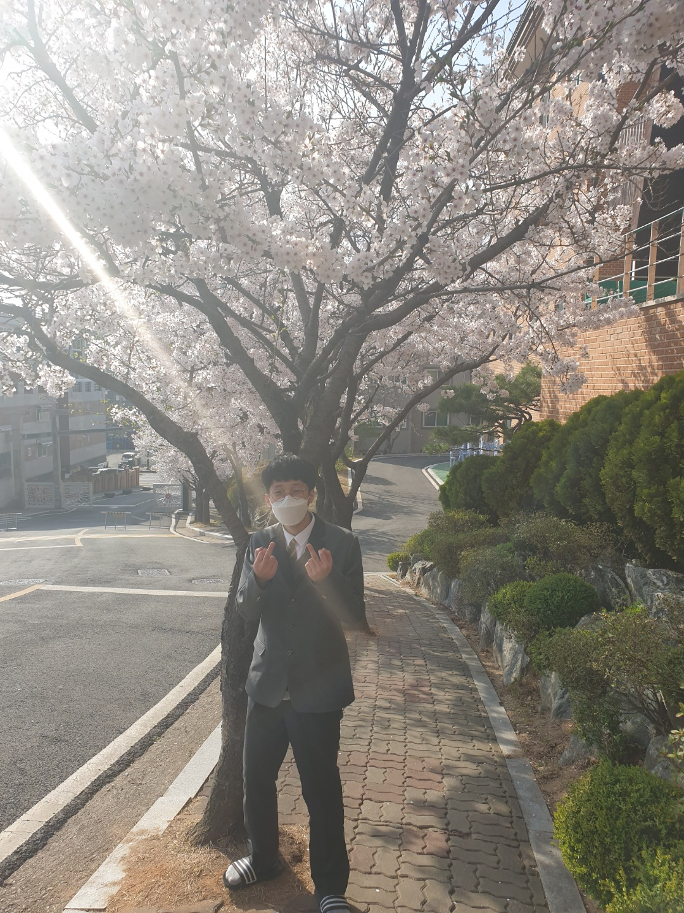

복준수의 형이자 동생이다. 그는 17살에 한국디지털미디어고등학교에 입학했으나, 일년 후 사망했다.(그는 관종짓을 하다 너무 많은 관심을 받은 나머지.., 행복사하였다.) 이것은 그를 기리기 위해 만들었음을 밝힌다.
복민수는 1학년, 그 반의 공식 얼짱(얼굴짱큼?얼굴짱잘생김)이였다.

복민수의 살아생전 초상화이다.
복민수는 학국정보올림피아드에서 3연속으로 3등만 했다. 참고로 그의 혈육인 복준수는 2등이였다.
복민수의 살아생전 별명
다음은 복민수의 디미백과 링크이다.
삼가짭준수의 명복을 빌며,..